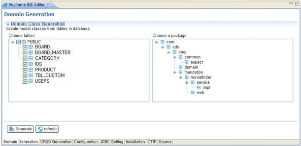

Domain Generation
Anyframe IDE을 이용해 Domain 클래스를 생성해본다.
DB 테이블 기반으로 Domain 클래스를 생성시키기 때문에 JDBC 설정이 제대로 되었는지 확인(JDBC Configuration 설정방법)한 후, Domain 클래스를
생성하도록 한다.
- 프로젝트를 선택한 후 우 클릭 >> Anyframe Tools >> Anyframe IDE 메뉴를 선택한다.
- Anyframe IDE Editor에서 Domain Generation Tab을 선택한다.
Refresh 버튼을 수행하면 현재 선택 가능한 DB Table들과 소스 코드 패키지가 트리 형태로 조회된다. 이때
Domain 클래스로 생성하고자 하는 Table을 선택하고, Domain 클래스를 어느 소스 코드 패키지 하위로 생성시킬 것인지를 선택한 후 Generate 버튼을 클릭한다.
참조 관계에 있는 테이블의 경우 해당 테이블을 동시에 선택하여 Domain 클래스를 생성해야 하며, 이를 통해 참조관계에 관한 정보가 제공된다.
- Select Tables: JDBC 구성에 따라 연결된 DB의 테이블 목록이 조회된다.
- Select a package: 해당 프로젝트에 있는 소스 코드 패키지 경로가 조회된다.(src/main/java 소스 폴더에 한함)
| DB 타입이 mysql인 경우 테이블 선택 시 주의사항 |
| Anyframe IDE에서는 Hibernate Tools의 API를 이용하여 Domain 자동 생성기능을 지원하고 있다.
DB가 mysql일 경우는 Hibernate Tools의 API에서 소문자로된 테이블명만 인식하므로,
대문자로 된 테이블명을 선택하여 Domain 클래스 자동 생성 기능을 수행하는 경우
Domain 클래스가 생성되지 않을 수 있다.(Ant를 프로젝트 빌드도구로 사용하는 경우) |

- Domain 클래스 생성 작업이 완료되면, Console 창을 통해 Build Successful 이라는 메세지가 출력된다.
Domain 클래스가 제대로 생성되었는지 확인하기 위해 Domain 클래스 생성시 지정한 패키지 하위로 Domain 클래스들이 위치하고 있는지 확인한다.
생성된 Domain 클래스는 JPA Annotation 설정을 통해 DB Table, Column 정보들을 가지고 있다.
참고로, Build Successful 메세지가 출력되어도 해당 패키지에 Domain 클래스가 생성되지 않은 경우는
Domain 클래스가 정상적으로 생성되지 않은 것이다.
예를 들어, DB 타입이 mysql인 경우처럼 Hibernate Tools의 API가 인식하지 못하는 테이블명이 입력되었을 경우,
Build Successful 메세지는 출력되지만 실제로 Domain 클래스는 생성되지 않는다.
@Entity
@Table(name = "BOARD")
//@Table의 schema 속성은 default 템플릿을 활용하여 sybase DB와 hibernate dao framework을 사용할때 정의됨
//@Table의 catalog 속성은 catalog 정보가 존재할 경우 정의됨
public class Board implements Serializable {
private BoardId id;
private BoardMaster boardMaster;
private String boardName;
중략...
@EmbeddedId
@AttributeOverrides({@AttributeOverride(name = "boardId",column =
@Column(name = "BOARD_ID",nullable = false)
)
, @AttributeOverride(name = "boardMasterId",column =
@Column(name = "BOARD_MASTER_ID",nullable = false)
)
})
public BoardId getId() {
return this.id;
}
public void setId(BoardId id) {
this.id = id;
}
@ManyToOne(fetch = FetchType.LAZY)
@JoinColumn(name = "BOARD_MASTER_ID", nullable = false,
insertable = false, updatable = false)
public BoardMaster getBoardMaster() {
return this.boardMaster;
}
public void setBoardMaster(BoardMaster boardMaster) {
this.boardMaster = boardMaster;
}
@Column(name = "BOARD_NAME", nullable = false, length = 150)
public String getBoardName() {
return this.boardName;
}
public void setBoardName(String boardName) {
this.boardName = boardName;
}
} |
[참고 사항]
위에서 설명한 기능 수행 도중에는 프로젝트 생성, 코드 생성 및 DB 변경 등과 같은 Anyframe IDE의 기능을 동시에 수행시킬 수 없으므로 유의하도록 한다.
(Background 실행을 통한 기능 수행 시) |
|